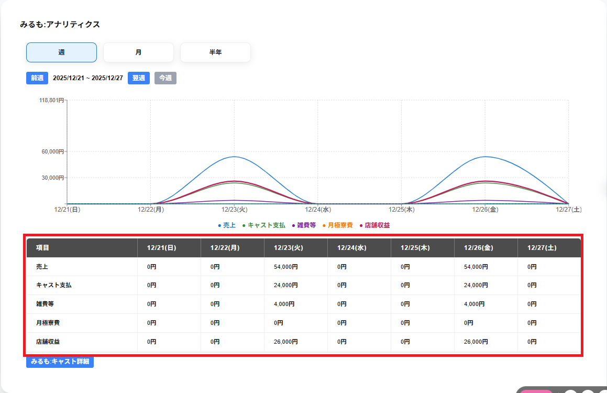

〇〇:アナリティクスの画面下部にはアナリティクスの項目ごとに項目が一覧で表示されます。
最左部の列にはアナリティクスのグラフで表示している各項目が表示されます。
最上部の行には期間が表示されます。
※週毎の表示の場合は選択した週の日毎のアナリティクスの項目が表示されます。
※月毎の表示の場合は選択した月の週毎のアナリティクスの項目が表示されます。
※半年毎の表示の場合は選択した半年の月毎のアナリティクスの項目が表示されます。
また、表の下のキャスト名:キャスト詳細をクリックすることでキャスト詳細に画面を遷移することができます。
